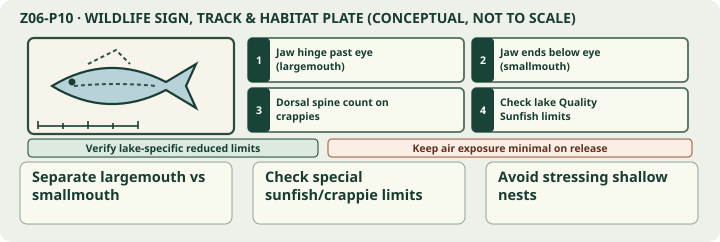

Z06-P10 · Hunting and fishing · New manuscript
Bass, Sunfish and Crappie Spawning Conservation Boundaries
Identify regional centrarchid species accurately and protect nesting beds and quality panfish populations.
When it applies · Warm-water lakes, bays, and slow rivers across Minnesota.
Equipment · MN DNR species guide, barbless or crimped hooks where practical, measuring rule.

Actions
- Distinguish largemouth bass (upper jaw extends past rear eye edge, horizontal dark stripe) from smallmouth bass (jaw ends under eye, vertical bars) and verify regional closed seasons or catch-and-release zones.[H01, H06]
- Check waterbody-specific Quality Sunfish Initiative or reduced crappie bag limits, which are lower than statewide limits on many Minnesota lakes.[H01]
- Minimize air exposure and avoid repeatedly pulling guarding male bass or sunfish off shallow spring spawning beds.[H01, H06]
Failure recognition · Ignoring local reduced sunfish limits or keeping bass during closed/catch-and-release spring windows violates regulations and depletes breeding stock.[H01]
Verify · Species ID, seasonal open status, and lake-specific reduced panfish limits are verified before keeping any catch.[H01, H06]
Stop or change course · Stop keeping panfish or bass if special waterbody rules have not been checked or spawning fish show stress.[H01]
Evidence and editorial notes
- H01 · Minnesota DNR · Minnesota Fishing Regulations (Current web edition)
- Section: Licensing, seasons, limits, and waterbody-specific rules · Conditions: Minnesota angling across inland, border, and designated waters
Support: Anglers must hold a valid license unless explicitly exempt and verify current season dates, possession limits, size slots, and special waterbody rules before fishing.
Limitations: Regulations change annually and differ on border waters, trout streams, and tribal/ceded territories; no emergency creates an automatic legal exemption. · Conflicting evidence: None noted.
Editorial note: Establishes Z06 fishing authority gate. · Specialist reviewer: Minnesota DNR fisheries and legal reviewer
Primary source · checked 2026-11-25 - H06 · Minnesota DNR · Fishes of Minnesota Species Reference (Current web edition)
- Section: Positive fish species identification before keeping catch · Conditions: Identifying regional game, rough, and protected fish species
Support: Accurate species identification using fin counts, mouth structure, markings, and body profile is mandatory to comply with limits and protected-species rules.
Limitations: Juveniles and hybrids can resemble restricted species; release immediately when positive identification is uncertain. · Conflicting evidence: None noted.
Editorial note: Connects Z06 identification to lawful harvest. · Specialist reviewer: Fisheries biologist
Primary source · checked 2026-11-25
Source lineage · New manuscript (Z06 P17 conservation) · Classification · New manuscript.